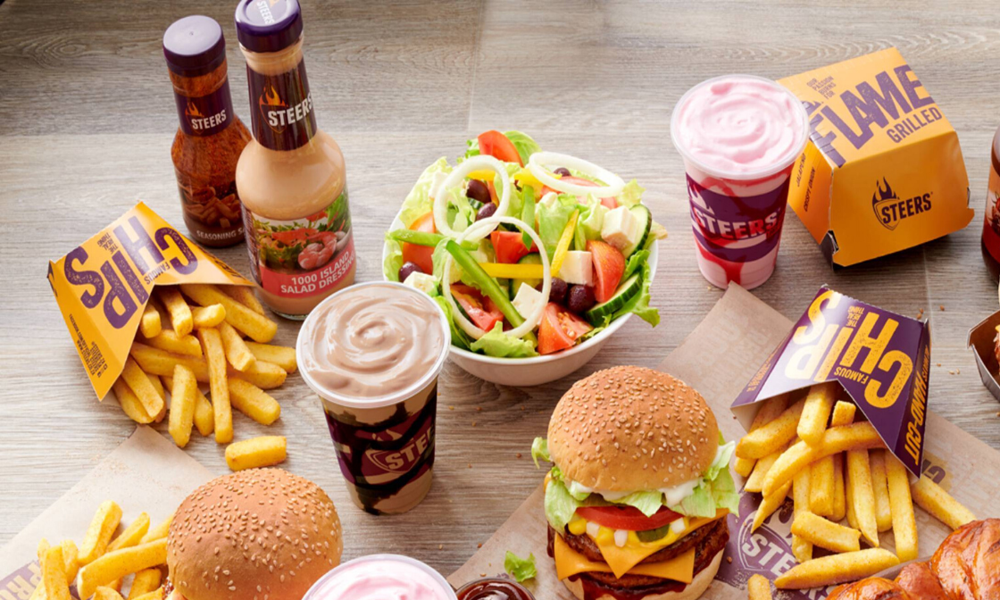

STEERZ
Steers is one of South Africa’s most recognizable quick-service restaurant brands. The company is well known for serving burgers and chips. Other menu items include chicken burgers, ribs as well as ice cream and milkshakes. The history of the company revolves around the Halamandaris family, whose family members are still part of the executive team today, with extensive experience in the food and franchising industries. Steers founder, George Halamandress had a vision to create a successful family-run business and the idea for Steers originated while he was on holiday in the United States where he came across innovative food industry concepts and ideas. He decided to bring these new food industry methods to South Africa, which was the starting point for the creation of a brand that would grow from strength to strength
Uncle George, as he was affectionately known, created the original Milky Lane ice cream parlours, followed in quick succession by the first South African steakhouse (the Rosebank Golden Spur), the Seven Steers steakhouse in Highlands North and the Black Steer in Yeoville in the early 1960s. He was also one of the first entrepreneurs to bring the franchising concept to South Africa. After Uncle George died in 1984, leadership of the chain passed to his nephews Peter, Theo, and their brother, Perry, as well as to Uncle George's youngest son, John. The three brothers had all been operating their own franchises and John was operating the manufacturing business, supplying Steers outlets and other retailers. Together, they re-engineered the brand and actively sought new franchisees. The early 1980s saw the opening of Steers in Sandton City, which attracted interest from would-be franchisees, and this encouraged the team behind Steers to launch their franchise programme. There seemed to be no shortage of prospective franchisees wanting to buy into their franchise model, and more than 15 Steers outlets had opened within two years, with this number growing to 250 stores 10 years later.
SOMETHING FOR EVERYONE!